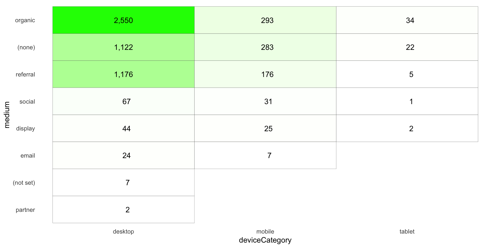
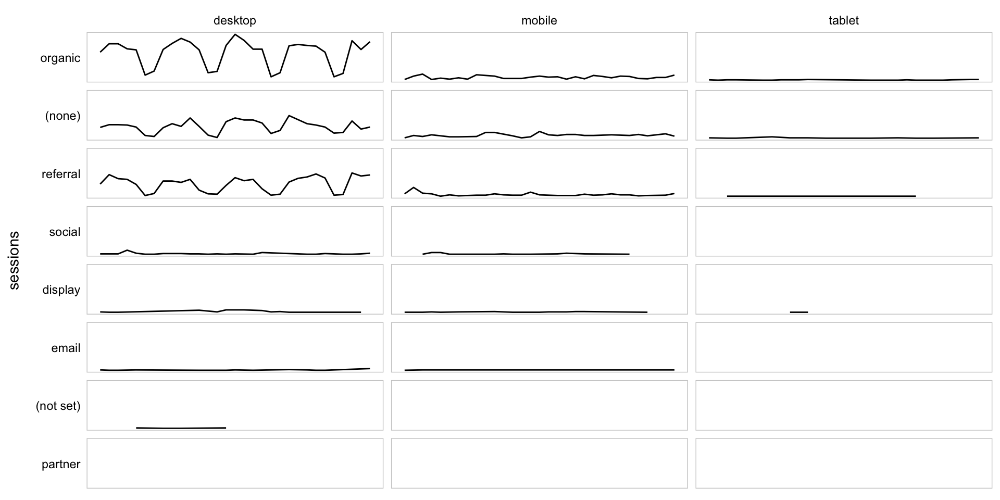

This example pulls sessions by day for device category and medium and then displays them two different ways:
. This is the advanced version of the Pivoted Data (after Querying) example.
Be sure you’ve completed the steps on the Initial Setup page before running this code.
For the setup, we’re going to load a few libraries, load our specific Google Analytics credentials, and then authorize with Google.
# Load the necessary libraries
library(googleAnalyticsR)
library(tidyverse)
library(devtools)
# Load the client ID, client secret, and GA view ID
client_id <- Sys.getenv("GA_CLIENT_ID")
client_secret <- Sys.getenv("GA_CLIENT_SECRET")
# Set the client ID and client secret as options for googleAuthR
options(googleAuthR.client_id = client_id)
options(googleAuthR.client_secret = client_secret)
# Reload the googleAnalyticsR package so those options get set in googleAuthR
devtools::reload(pkg = devtools::inst("googleAnalyticsR"))
# Authorize GA. Depending on if you've done this already and a .httr-oauth file has
# been saved or not, this may pop you over to a browser to authenticate.
ga_auth()
# Set the view ID and the date range. If you want to, you can swap out the Sys.getenv()
# call and just replace that with a hardcoded value for the view ID. And, the start
# and end date are currently set to choose the last 30 days, but those can be
# hardcoded as well.
view_id <- Sys.getenv("GA_VIEW_ID")
start_date <- Sys.Date() - 31 # 30 days back from yesterday
end_date <- Sys.Date() - 1 # YesterdayIf that all runs with just some messages but no errors, then you’re set for the next chunk of code: pulling the data.
This is a simple query with just three dimensions and one metric. We’re pulling the data at a daily level so we can plot the sparklines, but we’re then going to “roll it up” for the heatmap totals.
# Pull the data. See ?google_analytics_4() for additional parameters. The anti_sample = TRUE
# parameter will slow the query down a smidge and isn't strictly necessary, but it will
# ensure you do not get sampled data.
ga_data <- google_analytics_4(viewId = view_id,
date_range = c(start_date, end_date),
metrics = "sessions",
dimensions = c("date","medium","deviceCategory"),
anti_sample = TRUE)
# Go ahead and do a quick inspection of the data that was returned. This isn't required,
# but it's a good check along the way.
head(ga_data)| date | medium | deviceCategory | sessions |
|---|---|---|---|
| 2017-09-02 | (none) | desktop | 43 |
| 2017-09-02 | (none) | mobile | 21 |
| 2017-09-02 | (none) | tablet | 7 |
| 2017-09-02 | organic | desktop | 196 |
| 2017-09-02 | organic | mobile | 34 |
| 2017-09-02 | organic | tablet | 9 |
We’ve got two things we want to do here. Actually, one is a “want,” and one is a “need:”
Both of these are pretty straighforward to do.
# Remove the "date" component to get total sessions for the heatmap
ga_data_totals <- ga_data %>%
group_by(medium, deviceCategory) %>%
summarise(sessions = sum(sessions))
# Roll up to just be medium tables and then arrange the values for use in converting the
# medium column to a factor. This is one of those things that is pretty standard to need
# to do. We're going to sort descending, but, for one of the data frames, we're actually
# going to need to reverse the order as we create the factors. This just comes with
# experimentation and experience.
medium_totals <- ga_data %>%
group_by(medium) %>%
summarise(sessions = sum(sessions)) %>%
arrange(-sessions)
# Do the same thing, but for deviceCategory. For this one, we actually want to sort
# descending.
deviceCategory_totals <- ga_data %>%
group_by(deviceCategory) %>%
summarise(sessions = sum(sessions)) %>%
arrange(-sessions)
# Convert the medium and deviceCategory columns to factors in both of our main data frames.
ga_data$medium <- factor(ga_data$medium,
levels = medium_totals$medium)
ga_data$deviceCategory <- factor(ga_data$deviceCategory,
levels = deviceCategory_totals$deviceCategory)
ga_data_totals$medium <- factor(ga_data_totals$medium,
levels = rev(medium_totals$medium)) # Reversing the factor order
ga_data_totals$deviceCategory <- factor(ga_data_totals$deviceCategory,
levels = deviceCategory_totals$deviceCategory)
# Let's just check that the ga_data_totals we created looks pretty normal
head(ga_data_totals)| medium | deviceCategory | sessions |
|---|---|---|
| (none) | desktop | 3584 |
| (none) | mobile | 600 |
| (none) | tablet | 167 |
| Community | mobile | 6 |
| feed | desktop | 3 |
| feed | mobile | 1 |
We’re going to break the standard for this site with this example by doing two visualizations:
We’ll make a little heatmap of the data in a pivoted fashion with ggplot. This requires two “geoms” – geom_tile() to make the heatmap (the shaded grid), and then geom_text() to actually put the values in the heatmap. We’ll use the ga_data_totals data frame for this.
The use of the format() function in the label argument is a handy little way to get commas displayed in numbers as the 000s separator (which means it’s easy to swap out if you’re in a locale where that is not the convention).
Note how the order of the rows and columns seems pretty logical – from “biggest values” to “smallest values.” This is entirely due to the data munging we did to convert medium and deviceCategory to factors and imposing some logic on the ordering of their levels.
There is a lot of additional adjustments that you may want to get into with this layout, but this site isn’t intended to be a full tutorial on ggplot2, so we’re going to call this “good enough.”
# Create the plot
gg <- ggplot(ga_data_totals, mapping=aes(x = deviceCategory, y = medium)) +
geom_tile(aes(fill = sessions), colour = "grey30") +
geom_text(aes(label = format(sessions, big.mark = ","))) +
scale_fill_gradient(low = "white", high = "green") + # Specify the gradient colors
guides(fill = FALSE) + # Remove the legend
theme_light() +
theme(panel.grid = element_blank(),
panel.border = element_blank(),
axis.ticks = element_blank())
# Output the plot. You *could* just remove the "gg <-" in the code above, but it's
# generally a best practice to create a plot object and then output it, rather than
# outputting it on the fly.
gg
Now, we’re going to use the original data (albeit with medium and deviceCategory converted to factors) to plot a bunch of sparklines. Note that this is a fundamentally different technique than what was used for the heatmap. The heatmap used a “grid” geom – geom_text() – for the layout. For the sparklines, we’re going to relyin on facet_grid(), which is not a geom, but, rather, specifies a grid into which individual geom_line() geoms will be displayed.
Once again, we’ve got relatively minimal tuning of the actual visualization here, and most of that is through adjustments through theme(). Obviously, this could be adjusted much more.
# Create the plot
gg_sparklines <- ggplot(ga_data, mapping=aes(x = date, y = sessions)) +
geom_line() +
facet_grid(medium ~ deviceCategory, switch = "y") +
theme_light() +
theme(panel.grid = element_blank(),
panel.border = element_rect(fill = NA, colour = "gray80"),
panel.background = element_blank(),
strip.background = element_blank(),
strip.text = element_text(colour = "black"),
strip.text.y = element_text(angle = 0, hjust = 1),
axis.ticks = element_blank(),
axis.text = element_blank(),
axis.title.x = element_blank())
# Output the plot. You *could* just remove the "gg <-" in the code above, but it's
# generally a best practice to create a plot object and then output it, rather than
# outputting it on the fly.
gg_sparklines
This site is a sub-site to dartistics.com